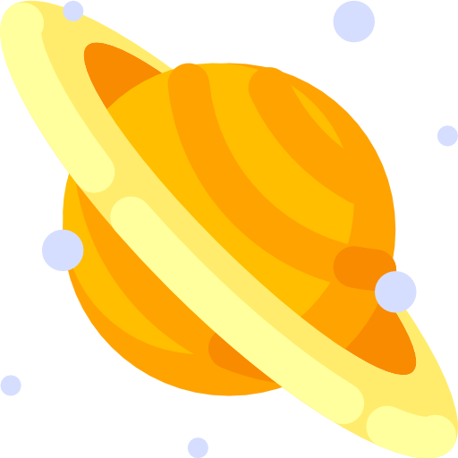
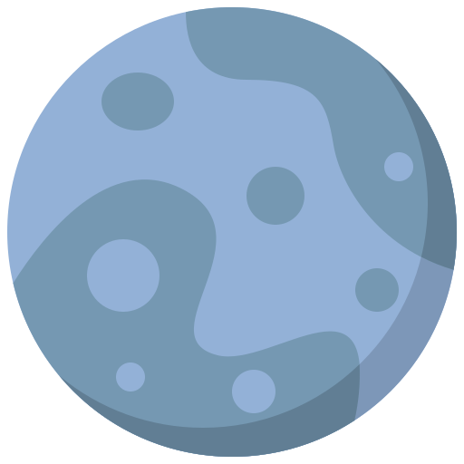

-

Сонячна система
-


Сонце
Сонце - єдина зірка Сонячної системи. Навколо Сонця обертаються інші об'єкти цієї системи: планети і їхні супутники, карликові планети і їхні супутники, астероїди, комети і космічний пил. Маса Сонця становить 99,866% від сумарної маси всієї Сонячної системи. Сонячне випромінювання підтримує життя на Землі. Сонце - магнітоактивна зірка. Вона володіє сильним магнітним полем, напруженість якого змінюється з часом і яке змінює напрямок приблизно кожні 11 років, під час сонячного максимуму.
-

Меркурiй
Меркурій - найближча до Сонця планета Сонячної системи, що обертається навколо Сонця за 88 земних діб. Тривалість одних зоряної доби на Меркурії складає 58,65 земних, а сонячних - 176 земних. Планета названа на честь давньоримського бога торгівлі Меркурія, аналога грецького Гермеса і вавілонського Набу. Меркурій можна назвати кам'яною пустелею, яка вкрита кратерами на зразок нашого Місяця. Меркурій світиться відбитим сонячним світлом і здається нам яскравою зіркою.
-

Венера
Венера - друга внутрішня планета Сонячної системи з періодом обертання в 224,7 земних діб. Планета отримала свою назву на честь Венери, богині любові з римського пантеону. Венера - третій за яскравістю об'єкт на небі Землі після Сонця і Місяця. Венера класифікується як землеподібну планета, і іноді її називають «сестрою Землі», тому що обидві планети схожі розмірами, силою тяжіння і складом. Однак умови на двох планетах дуже різняться. Венера обертається навколо своєї осі зі сходу на захід, тобто в напрямку, протилежному напрямку обертання більшості планет. Один оборот навколо осі займає 243 земних діб.
-

Земля
Земля – третя від Сонця планета Сонячної системи , найбільша по діаметру , масі і щільності серед планет земної групи. Наукові дані вказують на те , що Земля утворилася з Сонячної туманності близько 4540000000 років тому , і незабаром після цього придбала свій єдиний природний супутник - Місяць. Земля обертається навколо Сонця і робить навколо нього повний оборот приблизно за 365 днів . Місяць - початку своє звернення на орбіті навколо Землі приблизно 4,53 мільярда років тому , що стабілізувало осьової нахил планети і є причиною припливів , які уповільнюють обертання Землі . Деякі теорії вважають , що падіння астероїдів приводили до істотних змін в навколишньому середовищі і поверхні Землі , зокрема , масові вимирання різних видів живих істот.
-

Марс
Марс - четверта за віддаленості від Сонця і сьома ( передостання ) за розмірами планета Сонячної системи; маса планети складає 10,7 % маси Землі. Названа на честь Марса - давньоримського бога війни , відповідного давньогрецького Аресу . Іноді Марс називають « червоною планетою » через червонуватого відтінку поверхні , У Марса є два природних супутника - Фобос і Деймос (у перекладі з давньогрецької - «страх» і « жах» - імена двох синів Ареса , що супроводжували його в бою ) , які відносно малі ( Фобос - 26x21 км , Деймос - 13 км в поперечнику ) і мають неправильну форму. Відстань між Марсом та Сонцем – 227,9 млн. км. Марс обертається навколо Сонця за 687 діб.
-

Юпiтер
Юпітер - п'ята планета від Сонця, найбільша в Сонячній системі. Поряд з Сатурном, Ураном і Нептуном Юпітер класифікується як газовий гігант. Юпітер має, принаймні, 67 супутників, найбільші з яких - Іо, Європа, анімед і Каллісто - були відкриті Галілео Галілеєм в 1610 році. Діаметр Юпітера в 11 разів перевищує діаметр Землі. Його відстань до Сонця – 778 млн. км. Юпітер обертається навколо Сонця майже за 12 земних років.
-

Сатурн
Сатурн - шоста планета від Сонця і друга за розмірами планета в Сонячній системі після Юпітера. Сатурн, а також Юпітер, Уран і Нептун, класифікуються як газові гіганти. Сатурн названий на честь римського бога землеробства. Сатурн відноситься до типу газових планет: він складається в основному з газів і не має твердої поверхні. Середня відстань між Сатурном і Сонцем становить 1430 млн км. Сатурн обертається навколо Сонця за 10 759 днів. В якості тривалості обороту Сатурна навколо осі прийнята величина 10:00, 34 хвилини і 13 секунд.
-

Уран
Уран - сьома за віддаленості від Сонця, третя по діаметру і четверта за масою планета Сонячної системи. Була відкрита в 1781 році англійським астрономом Вільямом Гершелем і названа на честь грецького бога неба Урана, батька Кроноса (у римській міфології Сатурна) і, відповідно, діда Зевса. Відстань від Сонця – 2870 млн. км.
-

Нептун
Нептун - восьма і сама далека планета Сонячної системи. Нептун також є четвертою по діаметру і третій за масою планетою. Маса Нептуна в 17,2 рази, а діаметр екватора в 3,9 рази більше таких у Землі. Планета була названа на честь римського бога морів. Відстань від Сонця – 4497 млн. км. Обертається навколо Сонця за 165 земних років.
-

Плутон?
Сергій Драчук Прага, 24 серпня 2006 (RadioSvoboda.ua) – У сонячній системі поменшало на одну планету – їх залишилося вісім. Міжнародний астрономічний союз сьогодні позбавив статусу планети Плутон. Досі його вважали останньою, дев’ятою планетою Сонячної системи. Щоправда, в новій класифікації Плутона таки буде слово «планета»: для нього й кількох інших небесних тіл створили категорію «карликових планет». Детальнiша iнформацiя